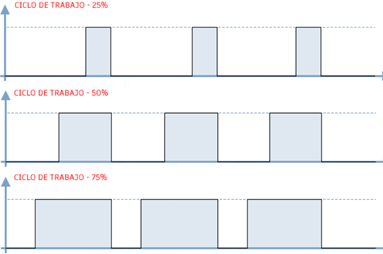

El LED RGB es un componente que integra tres diodos emisores de luz: uno rojo (R), uno verde (G) y uno azul (B). Combinando diferentes niveles de intensidad de cada color es posible generar una amplia gama de colores visibles.
En el ESP32, el control de la intensidad de cada color se logra utilizando la modulación por ancho de pulso (PWM, Pulse Width Modulation). Este método consiste en encender y apagar un pin a una frecuencia determinada, variando el porcentaje de tiempo en el que la señal permanece encendida (Duty Cycle). Un duty cycle mayor produce mayor intensidad de luz.

-
Fundamentos de PWM en MicroPython
- Se utiliza el módulo PWM de la librería machine.
- La frecuencia típica para controlar LEDs está entre 500 Hz y 1000 Hz.
- El duty cycle se expresa como un valor entre 0 (apagado) y el máximo permitido por el hardware (en el ESP32, 1023 para 100% de brillo).
Ejemplo de creación de un canal PWM:
from machine import Pin, PWM led_rojo = PWM(Pin(27)) led_rojo.freq(1000) # Frecuencia de 1 kHz led_rojo.duty(512) # Intensidad al 50%
-
Mezcla de colores
Al variar el duty cycle de cada canal (R, G, B) se pueden generar diferentes colores:
- Rojo: R alto, G y B bajos.
- Verde: G alto, R y B bajos.
- Azul: B alto, R y G bajos.
- Blanco: R, G y B al máximo.
- Colores intermedios: combinaciones proporcionales de los tres.
-
Aplicaciones
- Indicadores visuales para representar estados del sistema.
- Alarmas luminosas basadas en condiciones de sensores.
- Efectos visuales en proyectos interactivos o decorativos.